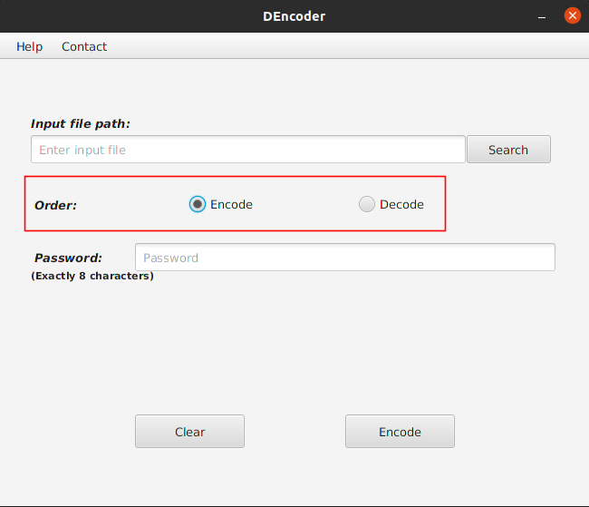

Componente Order
Este componente tiene la utilidad de indicar la orden que se desea realizar sobre el fichero, cifrar (Encode), o descifrar (Decode).

Este componente aparece marcado en cifrar por defecto al iniciarse la aplicación, y no permite desmarcar la opción, por lo tanto, nunca generará error al cifrar o descifrar, ya que siempre habrá una opción marcada.